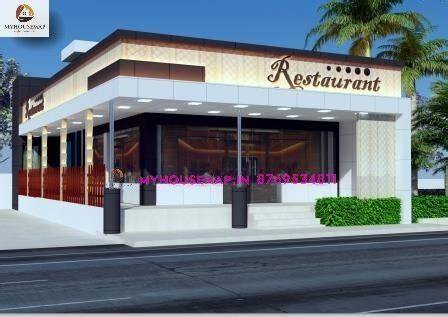
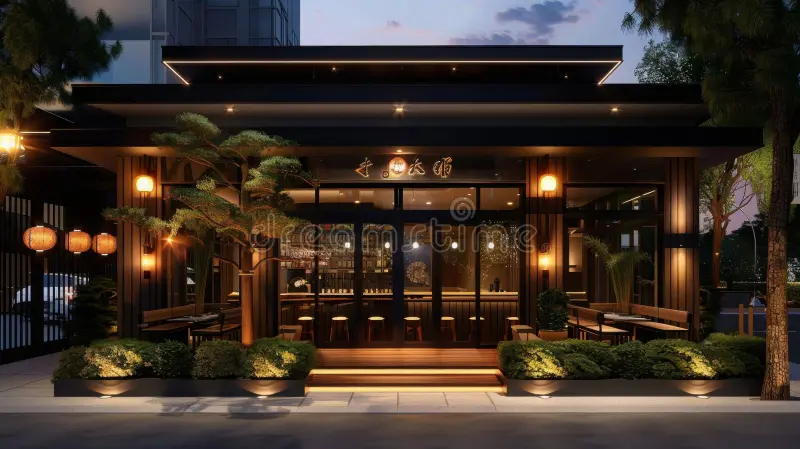

Where Every Meal Becomes a Memory
Serving authentic flavors with passion and care in the heart of Kiambu Township.
Visit Us
Our Restaurant
A welcoming space crafted for memorable dining experiences.


Experience
Our Story in Motion
Location
Kiambu Township, Kenya
Telephone
0712 345 678
info@sunrise.co.ke
About Us
Crafted with Care, Served with Pride
At Sunrise Restaurant, we believe dining is more than just food — it is an experience. Our chefs prepare every meal with fresh, locally sourced ingredients, blending tradition with creativity. Whether you are enjoying a family dinner, a casual lunch, or celebrating a special occasion, Sunrise Restaurant offers warm hospitality and unforgettable flavors.